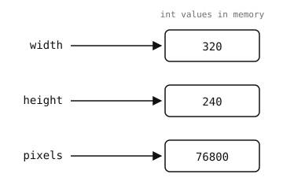

2.2. 变量与基本类型¶
变量 是你用 = 运算符绑定到某个值上的名字。赋值之后，这个名字可以用在任何能使用该值的地方：
width = 320
height = 240
pixels = width * height
print(pixels) # prints 76800
= 的右侧会先被求值，然后结果被绑定到左侧的名字上。读取一个从未赋值过的名字会引发 NameError。
变量只是一个标签。它指向一个值——值本身存在于别处，而同一个值可以拥有任意数量的标签。

变量是指向值的标签。重新给变量赋值会移动标签；它不会改变标签原先所指向的那个值。¶
2.2.1. 命名规则¶
2.2.2. 基本类型¶
Python 中的每个值都有一个 类型，它决定了该值支持哪些操作。你写得最多的四种类型是：
int —— 整数，正数或负数。MicroPython 整数可以增长到内存允许的大小。字面量写作普通数字：
0、42、-7。十六进制（0x1A）、八进制（0o17）和二进制（0b1010）字面量同样有效，并且对寄存器和位掩码很有用。float —— 带小数点或指数的数字：
3.14、1.0、-0.5、2e6（= 2,000,000.0）。摄像头上的所有浮点数都是 IEEE 754 32 位——精确到大约七位有效数字。bool —— 两个字面量
True或False之一（注意大小写）。str —— 文本，写作单引号或双引号之间的字符：
"hello"、'OpenMV'。两种引号风格是等价的；选择能让你避免转义字符串内部出现的引号字符的那一种。
还有第五个值得立刻了解的值：
None ——
NoneType类型的唯一值。用于表示“没有值”或“尚未设置”。没有显式返回任何内容的函数会隐式返回None。
2.2.3. 检查与转换类型¶
内置的 type() 函数返回任意值的类型：
>>> type(42)
<class 'int'>
>>> type(3.14)
<class 'float'>
>>> type("hello")
<class 'str'>
每个类型也兼作转换函数。把一个不同类型的值传给它，你就会得到对应的新类型的等价值——前提是该转换有明确定义：
>>> int("42")
42
>>> int(3.9)
3 # truncates toward zero, not rounds
>>> float("1.5")
1.5
>>> str(255)
'255'
>>> bool(0), bool(1), bool("")
(False, True, False)
没有明确定义的转换会引发 ValueError：
>>> int("hello")
Traceback (most recent call last):
File "<stdin>", line 1, in <module>
ValueError: invalid syntax for integer with base 10
2.2.4. 重新赋值与动态类型¶
一个名字可以在任何时候被重新赋值为任意类型的值。下面的代码是合法的：
x = 42
x = "now I'm a string"
x = 3.14
Python 不会把变量绑定到某个类型上。依赖 x 是整数的代码，只是在使用它的那一点期望它是整数；如果得到的是别的东西，你就会得到一个运行时 TypeError。
备注
重新给 x 赋值 不会 改变旧绑定所指向的值。如果两个名字共享同一个值，重新给其中一个赋值并不会影响另一个：
a = [1, 2, 3]
b = a # both point at the same list
a = "different now"
print(b) # still [1, 2, 3]
改变（mutate）一个共享的值则不同：像 list.append 这样的方法会改变绑定所指向的值，因此指向同一个值的每个其他名字都会看到这个改变。